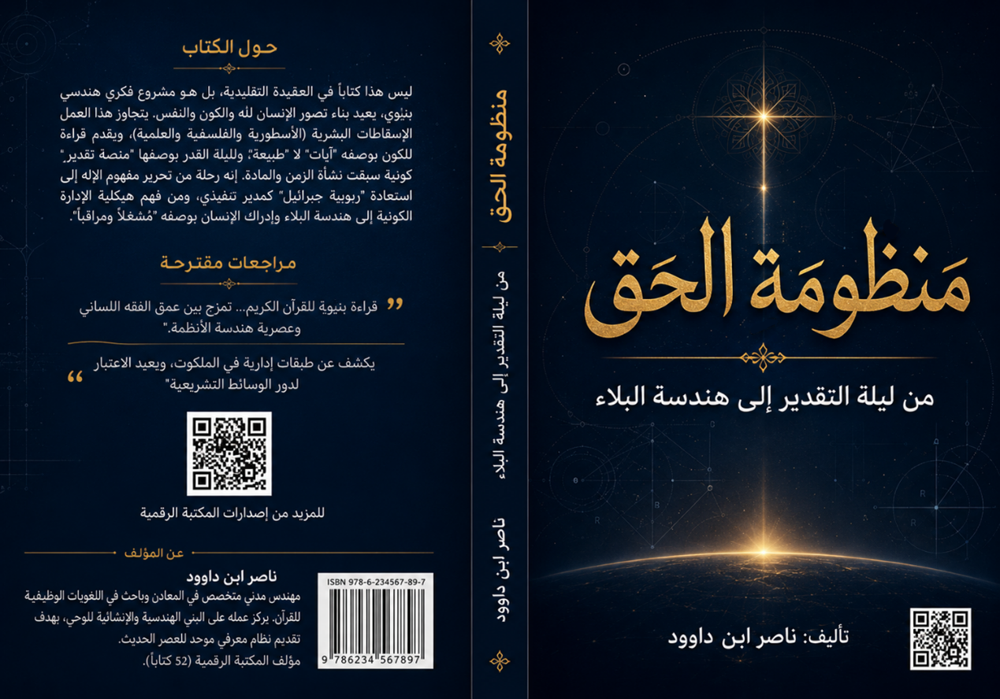

مقدمة الكتاب
يعيش الفكر الإنساني المعاصر أزمة معرفية حادة في مجاله الديني: أزمة تصور، وأزمة لغة، وأزمة منهج. صورة الله في الوعي الشعبي مشوشة بين أسطورة قديمة وفلسفة جافة وعلموية باردة. المصطلحات القرآنية الأساسية – الرب، الإله، العرش، الملكوت، القدر – أصبحت غريبة عن العقل الحديث. وفُصل بين "الكون" و"القرآن" و"النفس"، فظن العلماء أن العلم شيء والدين شيء آخر.
لهذا، يأتي هذا الكتاب ليعيد بناء الجسور المتصدعة، بلغة العصر، وبمنهج هندسي بنيوي، يخاطب المهندس والعالم والباحث عن الحق على حد سواء.
يقدم القرآن تصوراً رابعاً مختلفاً كلياً عن التصور الأسطوري أو الفلسفي أو العلمي التقني: إله حي قيوم، ليس كمثله شيء، رب العالمين، رحمن رحيم، ظاهر في آثاره باطن في حقيقته. هذا الكتاب يحاول سد الفجوة بين ما يعتقده الناس عن الله وما يريده القرآن أن نعتقده.
ما يميز هذا الكتاب هو منهج "فقه اللسان" – اكتشاف النظام الدلالي الداخلي للقرآن – والهندسة البنيوية التي تنظر إلى القرآن والكون والإنسان كنظام متكامل. إنه ليس تفسيراً تقليدياً، بل تفكيكاً هندسياً لمنظومة الحق، يصلح أن يكون "دليل تشغيل" للوعي الإنساني.
ملخص الكتاب
ينطلق هذا الكتاب من فكرة محورية: الكون ليس مادة صماء، بل منظومة تشغيل كبرى، صيغت أكوادها وقوانينها في لحظة غيبية مهيبة هي "ليلة القدر" – منصة التقدير التي سبقت الانفجار العظيم. سنفكك شيفرة الوجود لنكتشف أن العلاقة بين الخالق والكون هي علاقة الأمر بالخلق، كالبرمجيات بالمادة.
يتناول الكتاب ثلاثة أقسام رئيسية: التأسيس المعرفي (تحرير مفهوم الإله، الفرق بين الربوبية والألوهية، الأسماء الحسنى)، الهيكلية الكونية (النور، العرش، الملكوت)، والطبقة التنفيذية (جبرائيل، ليلة القدر، هندسة البلاء، هيكلية الإدارة الكونية). يختم بتقديم التوحيد كبروتوكول تشغيل نهائي يربط بين الكون المنشور والقرآن المسطور والإنسان المنظور.
الهدف الأسمى هو استعادة مركزية الله في الوعي البشري، لا كفكرة غامضة، بل كحقيقة هندسية ولسانية ووجودية.
أبرز مميزات الكتاب
- منهج "فقه اللسان" – تفكيك النظام الدلالي الداخلي للقرآن
- الهندسة البنيوية – رؤية القرآن والكون والإنسان كنظام متكامل
- تحرير مفهوم الإله من التشخيص الأسطوري والتجريد الفلسفي
- التمييز البنيوي بين الربوبية والألوهية والكشف عن الشرك الحديث
- تفسير ليلة القدر كمنصة تقدير كونية وليس مجرد ليلة في رمضان
- هندسة البلاء – إعادة تعريف الابتلاء كاختبار إجهاد ومعايرة للنفس
- هيكلية الإدارة الكونية – من العرش إلى السنن إلى الإنسان
- مخططات بصرية وجداول تلخيصية لتسهيل الفهم
- أسلوب أكاديمي رصين مع لغة معاصرة تخاطب المهندس والباحث
فهرس المحتويات
المقدمة والأسس المنهجية
الجزء الأول: التأسيس المعرفي وتحرير مفهوم الإله
الجزء الثاني: هيكلية الوجود والمراتب الوظيفية
الجزء الثالث: الطبقة التنفيذية – جبرائيل والربوبية الوظيفية
كلمة الختام
هذا الكتاب ليس نصاً مقدساً، بل مسودة مفتوحة. كل فكرة قابلة للمراجعة والنقد والإضافة والحذف. اليقين لا ينتمي إلا للقرآن نفسه، وليس لأي فهم بشري. المؤلف يدعو كل قارئ مفكر – سواء وافق أو اختلف – إلى أن يصبح شريكاً في هذا المشروع المعرفي التراكمي. فالحق لا يخاف النقد، والنور لا تنطفئه الاعتراضات.
ناصر ابن داوود – مكتبة ناصر ابن داوود الرقمية – يناير 2026